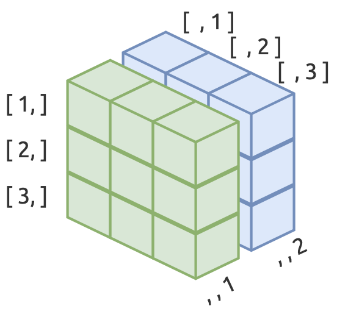

This lesson covers some basic exposure to R functions and data objects.
The slides for this section are available here.
Two major elements in R programming: functions and objects.
Functions perform operations (calculate a mean, build a table, create a graph, etc.)
Objects hold information (a collection of numbers, dates, words, models results, etc.)
Vectors are the fundamental data type in R. Most R functions are ‘vectorized’, meaning they’re optimized to work on vectors.
The “atomic” in atomic vectors means, “of or forming a single irreducible unit or component in a larger system.”
Logical vectors are handy because when we add them together, and the total number tells us how many TRUE values there are.
vec_logical <- c(TRUE, FALSE)
vec_logical
#> [1] TRUE FALSEInteger vectors are created with a number and capital letter L
vec_integer <- c(1L, 10L, 100L)
vec_integer
#> [1] 1 10 100Double vectors can be entered as decimals
vec_double <- c(0.1, 1.0, 10.01)
vec_double
#> [1] 0.10 1.00 10.01Note that character vectors need to be in quotes.
vec_character <- c("A", "B", "C")
vec_character
#> [1] "A" "B" "C"Store and explore - create an object, perform an operation on the object, store the results, then explore the contents with another function.
typeof()Explore all vectors with typeof()
typeof(vec_integer)
#> [1] "integer"is.integer()Integers have no decimals.
is.integer(vec_integer)
#> [1] TRUEis.numeric()Evaluate numeric vectors with is.numeric()
is.numeric(vec_double)
#> [1] TRUEis.logical()is.logical() to check vectors that are logical.
is.logical(vec_logical)
#> [1] TRUERecall that you can sum logical vectors.
TRUE + TRUE + FALSE + TRUE
#> [1] 3Great for subsetting too.
vec_integer > 5
#> [1] FALSE TRUE TRUEis.character()Check character vectors with is.character()
is.character(vec_character)
#> [1] TRUER is often referred to as a “vector-oriented”, “vectorized”, or “element-wise” language because of the way it deals with vectors. We will show an example of this behavior below:
THe code below creates a sequence of ten values between 1.5 and 10.5.
vec_seq_01 <- 1.5:10.5
length(vec_seq_01)
#> [1] 10
vec_seq_01
#> [1] 1.5 2.5 3.5 4.5 5.5 6.5 7.5 8.5 9.5 10.5Now we create vec_seq_02, which has a sequence of ten values between 0.2 and 2.0.
vec_seq_02 <- c(0.2, 0.4, 0.6, 0.8, 1.0,
1.2, 1.4, 1.6, 1.8, 2.0)
vec_seq_02
#> [1] 0.2 0.4 0.6 0.8 1.0 1.2 1.4 1.6 1.8 2.0Now we subtract vec_seq_02 from vec_seq_01:
vec_seq_01 - vec_seq_02
#> [1] 1.3 2.1 2.9 3.7 4.5 5.3 6.1 6.9 7.7 8.5The result is a vector that’s the subtraction of the first element of vec_seq_02 from the first element of vec_seq_01, and so on…
vec_seq_01[1] - vec_seq_02[1]
#> [1] 1.3
vec_seq_01[2] - vec_seq_02[2]
#> [1] 2.1
vec_seq_01[3] - vec_seq_02[3]
#> [1] 2.9Both vec_seq_01 and vec_seq_02 have equal lengths. What happens when we apply vectorized operations to objects of unequal length? Well, R attempts to recycle the operations. We will demonstrate this by creating vec_seq_03, which only has three numbers in it:
vec_seq_03 <- vec_seq_02[1:3]
vec_seq_03
#> [1] 0.2 0.4 0.6When we try to subtract vec_seq_03 from vec_seq_01 we get the following error:
vec_seq_01 - vec_seq_03
#> [1] 1.3 2.1 2.9 4.3 5.1 5.9 7.3 8.1 8.9 10.3This is telling us R attempted to subtract each element by position, but ran out of numbers.
That’s why the first three numbers of vec_seq_01 - vec_seq_03 look identical to vec_seq_01 - vec_seq_02:
# compare first three elements
vec_seq_01[1:3] - vec_seq_02[1:3]
#> [1] 1.3 2.1 2.9
# compare first three elements
vec_seq_01[1:3] - vec_seq_03[1:3]
#> [1] 1.3 2.1 2.9But when R goes looking elements at position vec_seq_03[4], it finds nothing (NA):
vec_seq_03[4]
#> [1] NASo it recycles at the beginning of the vector again. Look at the code below to see how this behavior creates the values in vec_seq_01 - vec_seq_03.
vec_seq_01 - vec_seq_03
#> [1] 1.3 2.1 2.9 4.3 5.1 5.9 7.3 8.1 8.9 10.3
vec_seq_01[1:3] - vec_seq_03[1:3]
#> [1] 1.3 2.1 2.9
vec_seq_01[4:6] - vec_seq_03[1:3]
#> [1] 4.3 5.1 5.9
vec_seq_01[7:9] - vec_seq_03[1:3]
#> [1] 7.3 8.1 8.9Where does the 10.3 come from? That is what’s left over (and why we get the error message).
vec_seq_01[10] - vec_seq_03[1]
#> [1] 10.3If vec_seq_01 had a length that was a multiple of vec_seq_03, R would’ve still performed recycling (but without an error message).
vec_seq_04 <- vec_seq_02[1:5]
vec_seq_01 - vec_seq_04
#> [1] 1.3 2.1 2.9 3.7 4.5 6.3 7.1 7.9 8.7 9.5S3 vector objects are factors, dates, date-times, durations.
Factors are categorical vectors with a given set of responses.
vec_factor <- factor(x = c("low", "medium", "high"))
vec_factor
#> [1] low medium high
#> Levels: high low medium
# Not character variables!
typeof(vec_factor)
#> [1] "integer"We can manually assign the order of factor levels with the levels argument in factor().
vec_factor <- factor(x = c("medium", "high", "low"),
levels = c("low", "medium", "high"))
# check with:
levels(vec_factor)
#> [1] "low" "medium" "high"
unclass(vec_factor)
#> [1] 2 3 1
#> attr(,"levels")
#> [1] "low" "medium" "high"Dates are stored as double vectors with a class attribute set to Date.
vec_date <- c(Sys.Date(), Sys.Date() + 1, Sys.Date() + 2)
vec_date
#> [1] "2020-12-30" "2020-12-31" "2021-01-01"
attributes(vec_date)
#> $class
#> [1] "Date"unclass() tells us what the actual number is.
unclass(vec_date)
#> [1] 18626 18627 18628Date-times contain a bit more information than dates.
vec_datetime_ct <- as.POSIXct(x = vec_date)
vec_datetime_ct
#> [1] "2020-12-29 17:00:00 MST" "2020-12-30 17:00:00 MST"
#> [3] "2020-12-31 17:00:00 MST"vec_datetime_ct is a double vector
typeof(vec_datetime_ct)
#> [1] "double"We need two times to be able to calculate the difftime, but the output is fairly clear.
time_01 <- Sys.Date()
time_02 <- Sys.Date() + 10
vec_difftime <- difftime(time_01, time_02, units = "days")
vec_difftime
#> Time difference of -10 daysThese have class and units attributes.
attributes(vec_difftime)
#> $class
#> [1] "difftime"
#>
#> $units
#> [1] "days"In the next sections we’ll cover matrices and arrays, two of R’s multidimensional objects.
These are two-dimensional objects. We can create with matrix().
We can make a matrix using our existing vectors.
mat_data <- matrix(data = c(vec_double, vec_integer),
nrow = 3, ncol = 2, byrow = FALSE)
mat_data
#> [,1] [,2]
#> [1,] 0.10 1
#> [2,] 1.00 10
#> [3,] 10.01 100We can check the dimensions of mat_data with dim().
dim(mat_data)
#> [1] 3 2We can subset using position.
mat_data[2, 2]
#> [1] 10Arrays are like matrices, but with more dimensions.

Arrays need three dimensions in the dim argument.
dat_array <- array(data = c(1, 2, 3, 4, 5, 6, 7, 8, 9, 10, 11, 12, 13,
14, 15, 16, 17, 18), dim = c(3, 3, 2))
dat_array
#> , , 1
#>
#> [,1] [,2] [,3]
#> [1,] 1 4 7
#> [2,] 2 5 8
#> [3,] 3 6 9
#>
#> , , 2
#>
#> [,1] [,2] [,3]
#> [1,] 10 13 16
#> [2,] 11 14 17
#> [3,] 12 15 18Matrices are arrays, but arrays are not matrices.
class(dat_array)
#> [1] "array"class(mat_data)
#> [1] "matrix" "array"If you’re importing spreadsheets, most of the work you’ll do in R will be with rectangular data objects (i.e. data.frames and tibbles).
Rectangular data with rows and columns.
We will create a data frame below using data.frame(). When we create a data frame, the data are transposed (i.e. columns are written left-to-right).
DataFrame <- data.frame(character = c("A", "B", "C"),
integer = c(0.1, 1.0, 10.01),
logical = c(TRUE, FALSE, TRUE),
stringsAsFactors = FALSE)
DataFrameNOTE: stringsAsFactors = FALSE is not required as of R version 4.0.0.
data.framesCheck the structure of the data.frame with str()
str(DataFrame)
#> 'data.frame': 3 obs. of 3 variables:
#> $ character: chr "A" "B" "C"
#> $ integer : num 0.1 1 10
#> $ logical : logi TRUE FALSE TRUEThese are special kinds of data.frames (they print better to the console, and character vectors are never coerced into factors).
tibblesCreating tibbles is not transposed.
Tibble <- tibble::tribble(
~character, ~integer, ~logical,
"A", 0.1, TRUE,
"B", 1, FALSE,
"C", 10.01, TRUE)
Tibbletibblestibbles are S3 objects, with types tbl_df, tbl, and data.frame
str(Tibble)
#> tibble [3 × 3] (S3: tbl_df/tbl/data.frame)
#> $ character: chr [1:3] "A" "B" "C"
#> $ integer : num [1:3] 0.1 1 10
#> $ logical : logi [1:3] TRUE FALSE TRUELists are unique objects in R because they are recursive vectors. We’ve pointed out that atomic vectors can’t be broken down into smaller components, but a list can store objects of multiple types (character, numeric, logical, etc.), data.frames, tibbles, and even other lists.
Unlike data.frames, tibbles (which require each vector to be of equal length), lists can store objects of different types and sizes.
We can put all the objects we’ve created in dat_list.
dat_list <- list("integer" = vec_integer,
"array" = dat_array,
"matrix data" = mat_data,
"data frame" = DataFrame,
"tibble" = Tibble)
dat_list
#> $integer
#> [1] 1 10 100
#>
#> $array
#> , , 1
#>
#> [,1] [,2] [,3]
#> [1,] 1 4 7
#> [2,] 2 5 8
#> [3,] 3 6 9
#>
#> , , 2
#>
#> [,1] [,2] [,3]
#> [1,] 10 13 16
#> [2,] 11 14 17
#> [3,] 12 15 18
#>
#>
#> $`matrix data`
#> [,1] [,2]
#> [1,] 0.10 1
#> [2,] 1.00 10
#> [3,] 10.01 100
#>
#> $`data frame`
#> character integer logical
#> 1 A 0.10 TRUE
#> 2 B 1.00 FALSE
#> 3 C 10.01 TRUE
#>
#> $tibble
#> # A tibble: 3 x 3
#> character integer logical
#> <chr> <dbl> <lgl>
#> 1 A 0.1 TRUE
#> 2 B 1 FALSE
#> 3 C 10.0 TRUEAnd we can see all of these elements are stored (with the appropriate name).
attributes(dat_list)
#> $names
#> [1] "integer" "array" "matrix data" "data frame" "tibble"Think of data.frames and tibbles as special kinds of rectangular lists, made with different types of vectors, with each vector being of equal length.